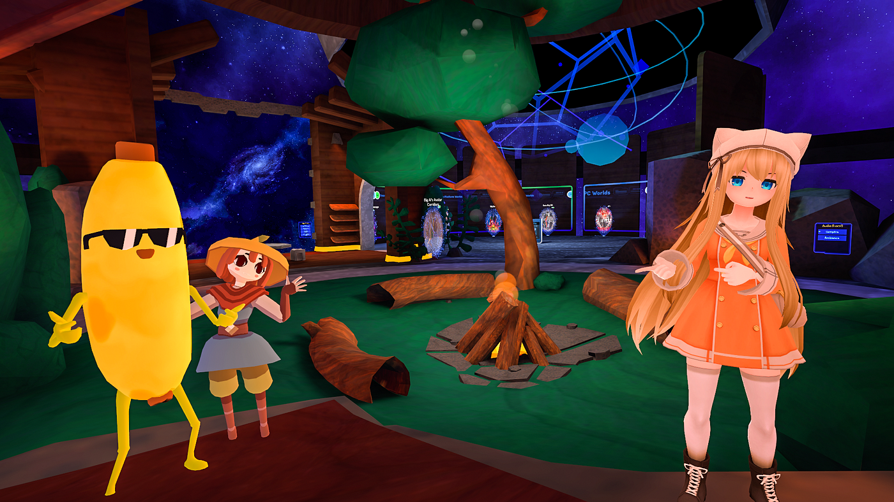

Criado em 2014, VRChat é um jogo em realidade virtual 3D. Em seu lançamento, o jogo poderia ser jogado no Oculus Rift. Por mais que o jogo seja melhor aproveitado em realidade virtual, nada impede que o jogador posso jogá-lo em seu desktop, embora boa parte da experiência do jogo se perde ao fazer isso.
VRChat foi feito usando Unity e C#. Sua gameplay consiste em exploração de mapas e a interação entre os outros jogadores, sendo esse último um dos focos maiores do jogo. Existem diversos mapas que podem ser explorados dentro desse jogo e cada um possui uma atmosfera e características únicas. Uma curiosidade interessante sobre o jogo é que os mapas podem ser feitos pela própria comunidade de jogadores caso o jogador em questão saiba usar a plataforma Unity e tenha conhecimentos sobre modelagem 3D. O próprio suporte e a equipe de desenvolvedores do jogo permitem que os jogadores integrem suas criações dentro do jogo.
Por ser um jogo 3D em realidade virtual focado na interação, o jogo possui avatares que podem ser os mais variados possíveis desde personagens de anime e jogos a pessoas famosas reais, isso apenas para dar uma ideia de como são os avatares. Assim como os mapas, os avatares podem ser feitos pelos próprios jogadores caso os mesmos saibam sobre modelagem 3D em Blender.
Crie novas amizades e interaja com pessoas de diferentes partes do mundo
Seja um criador de mapas e compartilhe seu trabalho com a comunidade
Modele diferentes avatares para surpreender seus amigos e para se sentir a vontade dentro do jogo
A comunidade do VRChat tem sido compartilhada a muito tempo. Faça parte da história do jogo e ajude o VRChat a chegar em mais pessoas.
{% endblock %} {% block footer %} {% endblock %}